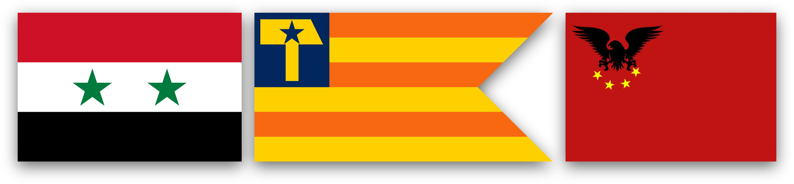

Tanomadala Officially Allies With the New United Arab Republic and the Democratic Parliament Monarchy Republic of Geobria

23/08/2026 - 19:30 (UTC+7)
Good morning, good afternoon, good evening, or goodnight, dear comrades. Just today, the chancellor and I have made very big decisions today. One of them being to ally with 2 micronations! That's right! We allied with 2 whole micronations in one day! How exciting! I'm gunna quickly summarize these micronations, our alliance with them, and what we hope to achieve with the two new buddies we made!
United Arab Republic This new UAR is a direct successor to the former 1958-1971 republic. It is decorated by the same flags, emblems, parties, and even rulers. Though not entirely based in either Egypt or Syria, this nation claims to be the direct continuation of the dead republic. It is ruled by Enzo I, better known online as President Gamal Abdel Nasser, who (as the name suggests) holds the presidency, and user 𐤓𐤅𐤇𐤅𐤓𐤀 who holds the vice presidency. It was formed by Enzo on the 13th of July, 2026, proclaiming, "This nation strives to fulfill Arab unity in the micro-national world and bring Arab and socialist nations under one banner, the banner of red, white, and black." This formal alliance we form with this new UAR strives to help them achieve just that. If you are well rehearsed on your Tanomadalan history, you'd know that at one point, the Arab Socialist Union, the ruling party of the UAR, started out by branching out into other nations, including ours. At one point we were a candidate for being a part of this new UAR. Even though we declined the offer, we will still support this nation's journey into a united Arab micronationalist state.
Democratic Parliament Monarchy Republic of Geobria No, you are not reading that incorrectly! Geobria is a unique specimen in the micronational world, and honestly, maybe we need more of those. They are based in the Philippines and are a relatively new state. Though their name could be pointed out as a sign of inconsistency and unprofessionalism, I personally think it's just a wonderful mishmash of new ideas. It's a reminder that micronationalism can just be for fun and not conform to the traditional governments set up by our predecessors. Oh and another cool thing! They're based in a school! Which is something pretty unique in my opinion :) Anyways... We allied with them to give Geobria a chance in the spotlight. We're looking to help them grow as a micronation.
We hope to strengthen relations with the two. We're looking to specifically open up a real-life diplomatic mission for the UAR in the future as well. We hope to see all our flags flown beside each other in glory and in peace.\ stay tuned and stay proud, comrades!

President Dave of Tanomadala